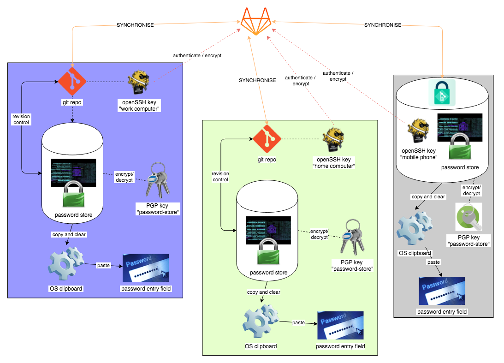
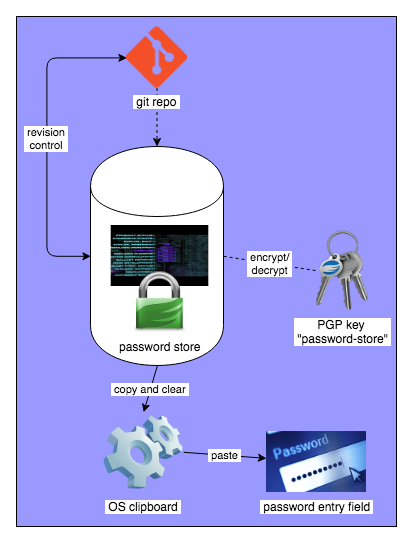

Password databases: setting up password-store on a Unix computer
Having covered what pass is, why I'm using it, and the required supporting tools gnupg, git, ssh and a private git remote, it's time to go over how to put the system together.
Setting it all up on a Unix computer is fairly straight-forward. Getting it onto an Android is a bit different. So in this post I'll cover how the pieces of the system fit together, and then walk through setting it up on Unix.
Synchronising your local password-store git repository with your remote store is done a bit differently depending if this is the first time you're setting up the remote, or if you already have a remote and you wish to merge it into your new local. I'll cover that too.
Here are all the parts of my password-store system. Don't worry, it's not as complicated as the drawing suggests:

Password-Store system — see a vector rendition
{kind=link}
This shows all the system components, deployed across three devices:
- a company workstation (left purple group)
- a personal workstation (centre green group)
- an Android device (right grey group)
Each group is the same (the Android stack is essentially the same, but grouped a little differently), and they all synchronise via the online private repository at GitLab.
The Unix password-store system
I'll focus on just one group, my company workstation, without looking at the synchronisation yet:

Password-Store Unix tool chain - see a vector rendition
{kind=link}
This shows the relationship between the parts of a normal pass system, with revision control added:
- The password store itself is central to the system, and is managed by
pass -
passdecrypts and encrypts passwords in the store usinggpgwith thepasword-storepgp keys. -
gpgdoes the actual cipher work. It takes care of the key's pass phrase entry too (usingpinentry) -
passmakes use ofgitto do automatic revision control -
passalso can copy passwords to the OS clipboard and clear them after a timeout - You fill in password entry fields by pasting from the clipboard (or you can bypass the clipboard with certain application extensions)
Installing password-store for Unix
This is how I install and set up for a password-store system in Unix.
Bootstrap with Keybase
I have encrypted my password store with a single PGP key pair. So these same keys need to exist along with the password store on all my devices.
One way to get the keys to your other computers is to encrypt them symmetrically and then email them to yourself. That is how I get them to my Android, but there are other ways to share secrets.
One easy way to share the key between computers is to use the Keybase.IO encrypted online filesystem, KBFS. I have the ASCII-armored Pub/Sec key stored on my private Keybase filesystem, where it is easy to import from. So the first thing to do is install keybase.
Import the password-store PGP keys to your GPG keychain
Once you have them on your system, via Keybase or some other means, import the password-store public/secret keys:
gpg --allow-secret-key-import \ --import /keybase/private/sinewalker/key/gpg/password-store.sec.asc
You also need to tell GPG that it may trust this key pair ultimately (it's safe to do this — they're your own keys!):
gpg --edit-key password-store trust 5 y save
Initialise Password-store
Now create a new password store signed with the password-store key, and also create a new local git repo
pass init password-store pass git init
It's okay that we're creating a new empty password store and repo here, even if you already have a password store in an online git remote. We'll fetch from the remote and merge it in later.
If this is your first password store, then you'll want to import your old passwords from wherever you have them. There are scripts available from the password-store website to help you with that.
Set up SSH for the remote
I authenticate to my remote using OpenSSH keys. This saves having to enter a password whenever pulling or pushing to the remote. I use a different key for each machine, and arrange to load it into my ssh-agent key chain when I login.
Generate new key-pairs and register the pubilc keys to the remote service per normal. See GitLab's SSH instructions for how to do this on their system. Others are quite similar.
Fetch and merge your passwords from the online remote
First, add the remote to your password-store git repository, and fetch the passwords:
pass git remote add origin git@gitlab.com:sinewalker/pass pass git fetch
Now we're almost there, but this little dance is needed to merge in the remote origin/master to the local git master. This seems to be something peculiar to git, I don't know if there is a better way? I do it by
- check out
origin/master - then create a
tempbranch starting from the current branch - then merge
tempback into the localmasterbranch (picking up everything from origin) - delete the
tempbranch - and finally setting the upstream branch for
masterasorigin/master:
pass git checkout origin/master pass git checkout -b temp pass git checkout -B master temp pass git branch -d temp pass git branch --set-upstream-to=origin/master master
Notice how all of these commands are just regular git commands but starting with pass? So pass just forwards all the commands straight through, arranging so that git is working with the password-store repository.
Synchronising with the remote
We now have a local password store that you can sync to gitlab.com
-
pass git pushto push local changes to the remote (origin) -
pass git pullto pull changes from the remote to local (i.e. changes made on other computers)
Other systems
That's it. Rinse and repeat for other Unix systems, as many as you need to store your passwords on.
Setting up on Android is a bit different, and I'll go over that next time.